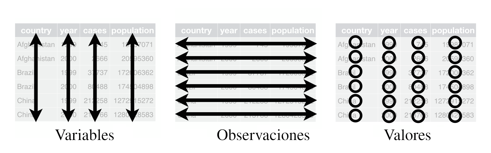

![]()
import importlib
try:
import pandas
import pyarrow
import pyarrow.csv
COLUMN_TYPES = {'Origin': pyarrow.dictionary(pyarrow.int32(), pyarrow.string()),
'Year': pyarrow.uint16(),
'Month': pyarrow.uint8(),
'DayofMonth': pyarrow.uint8(),
'CRSDepTime': pyarrow.uint16(),
'DepTime': pyarrow.uint16()}
tables = []
for year in range(1987, 2009):
tables.append(pyarrow.csv.read_csv(
f'/home/jcc/dataverse_files/{year}.csv',
convert_options=pyarrow.csv.ConvertOptions(
include_columns=COLUMN_TYPES,
column_types=COLUMN_TYPES)))
df = pyarrow.concat_tables(tables).to_pandas()
except ImportError:
# Si la librería pyarrow no está instalada, primero asegúrese de instalarla
print("PyArrow no está instalado, Por favor, instala pyarrow escribiendo 'pip install pyarrow'")Analítica de Proyectos
Integrando Python y R a la gestión de proyectos
Resumen
Nuestro planeta enfrenta problemas de gran complejidad. Por ejemplo, el calentamiento global requiere soluciones donde se combinen conocimientos de varias disciplinas profesionales tales como la geofísica, la ingeniería, la computación, y la gerencia de proyectos. Frente a este tipo problemas, es obvio pensar que necesitamos aprender a usar otras herramientas que vayan mucho más allá de lo que hemos aprendido con Microsoft Excel y Microsoft Project. En este blog tendrás un panorama práctico de cómo se integran herramientas de analítica de datos (Python y R) a la gestión y control de proyectos.
Palabras clave
Analítica de datos, Python y R, Proyectos de Complejidad, GitHub
La Ciencia de Datos (Hathaway y Larson 2021) y la Inteligencia Artificial (Russell y Norvig 2022) tienen el potencial de revolucionar la forma cómo trabajamos y resolvemos problemas de gran complejidad. Con este blog (el primero de una serie), intentaré ilustrar por qué Python y R (junto a GitHub) son las herramientas fundamentales para aquellos que tengan la responsabilidad de dirigir o gerenciar equipos multidisciplinarios.
1 ¿Por qué Python y R para la gestión de proyectos?
Hay varias razones de peso para considerar otras opciones más allá de Excel y de Microsoft Project para gestionar proyectos. A continuación algunas de ellas.
- La ciencia de datos y la inteligencia artificial no trabajan con herramientas de escritorio como las ofrecidas por Microsoft Office (i.e., Word, Excel, PowerPoint) debido a las llamadas 4Vs: Veracidad, Variabilidad, Volumen, y Velocidad con la que se producen los datos en el mundo real (Provost y Fawcett 2013).
- Excel es limitado a la hora abrir archivos con datos de gran volumen que están en el orden de los millones de filas o columnas (e.g., Excel no sirve para hacer “Big Data”)
- Con Microsoft Project no podemos saber los pequeños cambios que ocurrieron en cada uno de los archivos asociados al desarrollo del proyecto. Con Python y R, estos cambios pueden gestionarse de mánera ágil usando una potente herramienta llamada GitHub.
- Ni Excel ni Project son útiles para analizar “datos no estructurados” tales como colecciones de documentos, fotos, videos, o audios. En cambio los datos no estructurados son analizables con Python y R de una forma más versátil y ágil. Sobre ello hablaremos más en detalle en un próximo blog sobre HuggingFace
- El análisis de datos no estructurados es la base fundamental de herramientas como el aprendizaje automático (conocido en inglés como Machine Learning).
Parte de lo que veremos en las próximas subsecciones está tomado del libro de texto de Hathaway y Larson (2021) quienes se inspiraron en la “biblia” de la ciencia de datos escrita por Wickham y Grolemund (2017).
2 Extracción, Transformación y Carga de Datos Estructurados
La extracción, transformación y carga de datos estructurados en inglés se abrevia con las siglas “ETL” (“extraction, transformation and loading”). ETL es un ejercicio muy típico en tareas de big data sobre las cuales se apoyan rutinariamente aplicaciones de inteligencia artificial tales como el aprendizaje automático. La sintaxis que veremos a continuación nos permite abrir un total de 22 archivos separados por comas (.csv) con datos de vuelos internacionales. Parte de lo que veremos acá está adaptado del blog de Marc Garcia (2022). Para ello, nos vamos a apoyar en “pandas” la cual es una librería muy conocida dentro de Python.
Esta librería fue diseñada para realizar tareas relacionadas con la lectura, edición, y manipulación de datos estructurados. Por datos estructurados vamos a comprender una tabla en donde las variables que nos interesa analizar se ordenan por columnas, las observaciones de cada variable se ordenan por filas, y los valores de cada observación para cada variable se registran en cada celda, tal como aparece en la siguiente imágen.

Además de pandas, vamos a usar otras librerías como “importlib” y “pyarrow” para acortar el tiempo que nos tomará abrir los siguientes datos.
Los datos que hemos abierto, tienen la siguiente apariencia
df.head(5)| Origin | Year | Month | DayofMonth | CRSDepTime | DepTime | |
|---|---|---|---|---|---|---|
| 0 | SAN | 1987 | 10 | 14 | 730 | 741.0 |
| 1 | SAN | 1987 | 10 | 15 | 730 | 729.0 |
| 2 | SAN | 1987 | 10 | 17 | 730 | 741.0 |
| 3 | SAN | 1987 | 10 | 18 | 730 | 729.0 |
| 4 | SAN | 1987 | 10 | 19 | 730 | 749.0 |
Podemos hacer algunos pequeños cambios a la base de datos de la siguiente manera
date = pandas.to_datetime(df[['Year', 'Month', 'DayofMonth']].rename(columns={'DayofMonth': 'Day'}))
df['scheduled_dep'] = date + pandas.to_timedelta((df['CRSDepTime'] // 100) * 60 + (df['CRSDepTime'] % 100),
unit='minutes')
df['actual_dep'] = date + pandas.to_timedelta((df['DepTime'] // 100) * 60 + (df['DepTime'] % 100),
unit='minutes')
del date
df = df[['Origin', 'scheduled_dep', 'actual_dep']]
df['delay'] = (df['actual_dep'] - df['scheduled_dep']).dt.total_seconds() / 60 / 60
df['delay'] = df['delay'].where(df['delay'] > - 2, 24 - df['delay'])
df.tail(5)| Origin | scheduled_dep | actual_dep | delay | |
|---|---|---|---|---|
| 118914453 | BOS | 2008-04-17 10:25:00 | 2008-04-17 10:25:00 | 0.000000 |
| 118914454 | CVG | 2008-04-17 13:20:00 | 2008-04-17 13:19:00 | -0.016667 |
| 118914455 | BOS | 2008-04-17 13:35:00 | 2008-04-17 13:35:00 | 0.000000 |
| 118914456 | CVG | 2008-04-17 19:35:00 | 2008-04-17 19:33:00 | -0.033333 |
| 118914457 | BWI | 2008-04-17 06:15:00 | 2008-04-17 06:21:00 | 0.100000 |
Luego de esta última sintaxis en Python vemos que la base de datos que hemos abierto tiene un total de 118.914.457 filas y cuatro columnas, aunque originalmente la base de datos tenía un total de seis columnas. A continuación te comparto algunas preguntas sugeridas para que prodfundices en tu aprendizaje sobre la analítica de datos.
3 Preguntas de profundización
- ¿Qué hace la librería importlib y en qué se diferencia de pandas?
- ¿Exactamente qué se hizo para cambiar la base de datos que originalmente tenía seis variables para tener tan solo cuatro?
- ¿Cuán relevante sería aprender sobre más herramientas de Big Data para industrias como el comercio y las ventas de consumo masivo?
- ¿Qué otras opciones podemos seguir para abrir y transformar los datos que hemos usado como ejemplo en este blog (puedes consultar el propio blog de Marc Garcia (2022)).
- ¿Qué deberíamos cambiar en las sintaxis para incorporar otras variables como la ciudad de destino, la distancia recorrida, el tiempo de cada vuelo, y la hora de llegada a la ciudad de destino?
En un próximo blog, vamos a enfocarnos en la minería de datos y cómo Python y R nos pueden ayudar a analizar estadísticamente datos no estructurados.
Referencias
Garcia, M. 2022. «pandas with hundreds of millions of rows». https://datapythonista.me/blog/pandas-with-hundreds-of-millions-of-rows.
Hathaway, J., y K. Larson. 2021. Python for Data Science. GitHub. https://byuidatascience.github.io/python4ds/.
Provost, F., y T. Fawcett. 2013. Data Science for Business. California: O’Reilly.
Russell, S., y P. Norvig. 2022. Artificial Intelligence: A Modern Approach. Pearson Education.
Wickham, H., y G. Grolemund. 2017. R for Data Science. New York: O’Reilly.